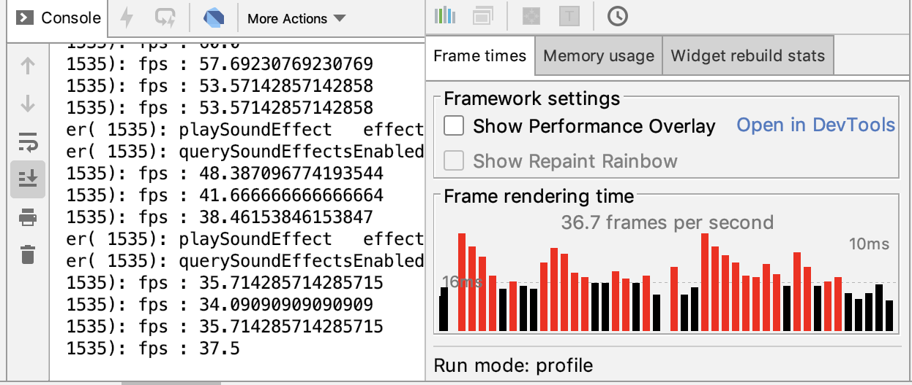

- 00 开篇词 为什么每一位大前端从业者都应该学习Flutter？.md.html
- 01 预习篇 · 从0开始搭建Flutter工程环境.md.html
- 02 预习篇 · Dart语言概览.md.html
- 03 深入理解跨平台方案的历史发展逻辑.md.html
- 04 Flutter区别于其他方案的关键技术是什么？.md.html
- 05 从标准模板入手，体会Flutter代码是如何运行在原生系统上的.md.html
- 06 基础语法与类型变量：Dart是如何表示信息的？.md.html
- 07 函数、类与运算符：Dart是如何处理信息的？.md.html
- 08 综合案例：掌握Dart核心特性.md.html
- 09 Widget，构建Flutter界面的基石.md.html
- 10 Widget中的State到底是什么？.md.html
- 11 提到生命周期，我们是在说什么？.md.html
- 12 经典控件（一）：文本、图片和按钮在Flutter中怎么用？.md.html
- 13 经典控件（二）：UITableView_ListView在Flutter中是什么？.md.html
- 14 经典布局：如何定义子控件在父容器中排版的位置？.md.html
- 15 组合与自绘，我该选用何种方式自定义Widget？.md.html
- 16 从夜间模式说起，如何定制不同风格的App主题？.md.html
- 17 依赖管理（一）：图片、配置和字体在Flutter中怎么用？.md.html
- 18 依赖管理（二）：第三方组件库在Flutter中要如何管理？.md.html
- 19 用户交互事件该如何响应？.md.html
- 20 关于跨组件传递数据，你只需要记住这三招.md.html
- 21 路由与导航，Flutter是这样实现页面切换的.md.html
- 22 如何构造炫酷的动画效果？.md.html
- 23 单线程模型怎么保证UI运行流畅？.md.html
- 24 HTTP网络编程与JSON解析.md.html
- 25 本地存储与数据库的使用和优化.md.html
- 26 如何在Dart层兼容Android_iOS平台特定实现？（一）.md.html
- 27 如何在Dart层兼容Android_iOS平台特定实现？（二）.md.html
- 28 如何在原生应用中混编Flutter工程？.md.html
- 29 混合开发，该用何种方案管理导航栈？.md.html
- 30 为什么需要做状态管理，怎么做？.md.html
- 31 如何实现原生推送能力？.md.html
- 32 适配国际化，除了多语言我们还需要注意什么_.md.html
- 33 如何适配不同分辨率的手机屏幕？.md.html
- 34 如何理解Flutter的编译模式？.md.html
- 35 Hot Reload是怎么做到的？.md.html
- 36 如何通过工具链优化开发调试效率？.md.html
- 37 如何检测并优化Flutter App的整体性能表现？.md.html
- 38 如何通过自动化测试提高交付质量？.md.html
- 39 线上出现问题，该如何做好异常捕获与信息采集？.md.html
- 40 衡量Flutter App线上质量，我们需要关注这三个指标.md.html
- 41 组件化和平台化，该如何组织合理稳定的Flutter工程结构？.md.html
- 42 如何构建高效的Flutter App打包发布环境？.md.html
- 43 如何构建自己的Flutter混合开发框架（一）？.md.html
- 44 如何构建自己的Flutter混合开发框架（二）？.md.html
- 特别放送 温故而知新，与你说说专栏的那些思考题.md.html
- 结束语 勿畏难，勿轻略.md.html
- 捐赠
40 衡量Flutter App线上质量，我们需要关注这三个指标
你好，我是陈航。
在上一篇文章中，我与你分享了如何捕获Flutter应用的未处理异常。所谓异常，指的是Dart代码在运行时意外发生的错误事件。对于单一异常来说，我们可以使用try-catch，或是catchError去处理；而如果我们想对异常进行集中的拦截治理，则需要使用Zone，并结合FlutterError进行统一管理。异常一旦被抓取，我们就可以利用第三方数据上报服务（比如Bugly），上报其上下文信息了。
这些线上异常的监控数据，对于开发者尽早发现线上隐患，确定问题根因至关重要。如果我们想进一步评估应用整体的稳定性的话，就需要把异常信息与页面的渲染关联起来。比如，页面渲染过程是否出现了异常，而导致功能不可用？
而对于以“丝般顺滑”著称的Flutter应用而言，页面渲染的性能同样需要我们重点关注。比如，界面渲染是否出现会掉帧卡顿现象，或者页面加载是否会出现性能问题导致耗时过长？这些问题，虽不至于让应用完全不能使用，但也很容易引起用户对应用质量的质疑，甚至是反感。
通过上面的分析，可以看到，衡量线上Flutter应用整体质量的指标，可以分为以下3类：
- 页面异常率；
- 页面帧率；
- 页面加载时长。
其中，页面异常率反应了页面的健康程度，页面帧率反应了视觉效果的顺滑程度，而页面加载时长则反应了整个渲染过程中点对点的延时情况。
这三项数据指标，是度量Flutter应用是否优秀的重要质量指标。通过梳理这些指标的统计口径，建立起Flutter应用的质量监控能力，这样一来我们不仅可以及早发现线上隐患，还可以确定质量基线，从而持续提升用户体验。
所以在今天的分享中，我会与你详细讲述这3项指标是如何采集的。
页面异常率
页面异常率指的是，页面渲染过程中出现异常的概率。它度量的是页面维度下功能不可用的情况，其统计公式为：页面异常率=异常发生次数/整体页面PV数。
在了解了页面异常率的统计口径之后，接下来我们分别来看一下这个公式中的分子与分母应该如何统计吧。
我们先来看看异常发生次数的统计方法。通过上一篇文章，我们已经知道了在Flutter中，未处理异常需要通过Zone与FlutterError去捕获。所以，如果我们想统计异常发生次数的话，依旧是利用这两个方法，只不过要在异常拦截的方法中，通过一个计数器进行累加，统一记录。
下面的例子演示了异常发生次数的具体统计方法。我们使用全局变量exceptionCount，在异常捕获的回调方法_reportError中持续地累加捕获到的异常次数：
int exceptionCount = 0;
Future<Null> _reportError(dynamic error, dynamic stackTrace) async {
exceptionCount++; //累加异常次数
FlutterCrashPlugin.postException(error, stackTrace);
}
Future<Null> main() async {
FlutterError.onError = (FlutterErrorDetails details) async {
//将异常转发至Zone
Zone.current.handleUncaughtError(details.exception, details.stack);
};
runZoned<Future<Null>>(() async {
runApp(MyApp());
}, onError: (error, stackTrace) async {
//拦截异常
await _reportError(error, stackTrace);
});
}
接下来，我们再看看整体页面PV数如何统计吧。整体页面PV数，其实就是页面的打开次数。通过第21篇文章“路由与导航，Flutter是这样实现页面切换的”，我们已经知道了Flutter页面的切换需要经过Navigator来实现，所以页面切换状态也需要通过Navigator才能感知到。
与注册页面路由类似的，在MaterialApp中，我们可以通过NavigatorObservers属性，去监听页面的打开与关闭。下面的例子演示了NavigatorObserver的具体用法。在下面的代码中，我们定义了一个继承自NavigatorObserver的观察者，并在其didPush方法中，去统计页面的打开行为：
int totalPV = 0;
//导航监听器
class MyObserver extends NavigatorObserver{
@override
void didPush(Route route, Route previousRoute) {
super.didPush(route, previousRoute);
totalPV++;//累加PV
}
}
class MyApp extends StatelessWidget {
@override
Widget build(BuildContext context) {
return MaterialApp(
//设置路由监听
navigatorObservers: [
MyObserver(),
],
home: HomePage(),
);
}
}
现在，我们已经收集到了异常发生次数和整体页面PV数这两个参数，接下来我们就可以计算出页面异常率了：
double pageException() {
if(totalPV == 0) return 0;
return exceptionCount/totalPV;
}
可以看到，页面异常率的计算还是相对比较简单的。
页面帧率
页面帧率，即FPS，是图像领域中的定义，指的是画面每秒传输帧数。由于人眼的视觉暂留特质，当所见到的画面传输帧数高于一定数量的时候，就会认为是连贯性的视觉效果。因此，对于动态页面而言，每秒钟展示的帧数越多，画面就越流畅。
由此我们可以得出，FPS的计算口径为单位时间内渲染的帧总数。在移动设备中，FPS的推荐数值通常是60Hz，即每秒刷新页面60次。
为什么是60Hz，而不是更高或更低的值呢？这是因为显示过程，是由VSync信号周期性驱动的，而VSync信号的周期就是每秒60次，这也是FPS的上限。
CPU与GPU在接收到VSync信号后，就会计算图形图像，准备渲染内容，并将其提交到帧缓冲区，等待下一次VSync信号到来时显示到屏幕上。如果在一个VSync时间内，CPU或者GPU没有完成内容提交，这一帧就会被丢弃，等待下一次机会再显示，而这时页面会保留之前的内容不变，造成界面卡顿。因此，FPS低于60Hz时就会出现掉帧现象，而如果低于45Hz则会有比较严重的卡顿现象。
为方便开发者统计FPS，Flutter在全局window对象上提供了帧回调机制。我们可以在window对象上注册onReportTimings方法，将最近绘制帧耗费的时间（即FrameTiming），以回调的形式告诉我们。有了每一帧的绘制时间后，我们就可以计算FPS了。
需要注意的是，onReportTimings方法只有在有帧被绘制时才有数据回调，如果用户没有和App发生交互，界面状态没有变化时，是不会产生新的帧的。考虑到单个帧的绘制时间差异较大，逐帧计算可能会产生数据跳跃，所以为了让FPS的计算更加平滑，我们需要保留最近25个FrameTiming用于求和计算。
而另一方面，对于FPS的计算，我们并不能孤立地只考虑帧绘制时间，而应该结合VSync信号的周期，即1/60秒（即16.67毫秒）来综合评估。
由于帧的渲染是依靠VSync信号驱动的，如果帧绘制的时间没有超过16.67毫秒，我们也需要把它当成16.67毫秒来算，因为绘制完成的帧必须要等到下一次VSync信号来了之后才能渲染。而如果帧绘制时间超过了16.67毫秒，则会占用后续的VSync信号周期，从而打乱后续的绘制次序，产生卡顿现象。这里有两种情况：
- 如果帧绘制时间正好是16.67的整数倍，比如50，则代表它花费了3个VSync信号周期，即本来可以绘制3帧，但实际上只绘制了1帧；
- 如果帧绘制时间不是16.67的整数倍，比如51，那么它花费的VSync信号周期应该向上取整，即4个，这意味着本来可以绘制4帧，实际上只绘制了1帧。
所以我们的FPS计算公式最终确定为：FPS=60*实际渲染的帧数/本来应该在这个时间内渲染完成的帧数。
下面的示例演示了如何通过onReportTimings回调函数实现FPS的计算。在下面的代码中，我们定义了一个容量为25的列表，用于存储最近的帧绘制耗时FrameTiming。在FPS的计算函数中，我们将列表中每帧绘制时间与VSync周期frameInterval进行比较，得出本来应该绘制的帧数，最后两者相除就得到了FPS指标。
需要注意的是，Android Studio提供的Flutter插件里展示的FPS信息，其实也来自于onReportTimings回调，所以我们在注册回调时需要保留原始回调引用，否则插件就读不到FPS信息了。
import 'dart:ui';
var orginalCallback;
void main() {
runApp(MyApp());
//设置帧回调函数并保存原始帧回调函数
orginalCallback = window.onReportTimings;
window.onReportTimings = onReportTimings;
}
//仅缓存最近25帧绘制耗时
const maxframes = 25;
final lastFrames = List<FrameTiming>();
//基准VSync信号周期
const frameInterval = const Duration(microseconds: Duration.microsecondsPerSecond ~/ 60);
void onReportTimings(List<FrameTiming> timings) {
lastFrames.addAll(timings);
//仅保留25帧
if(lastFrames.length > maxframes) {
lastFrames.removeRange(0, lastFrames.length - maxframes);
}
//如果有原始帧回调函数，则执行
if (orginalCallback != null) {
orginalCallback(timings);
}
}
double get fps {
int sum = 0;
for (FrameTiming timing in lastFrames) {
//计算渲染耗时
int duration = timing.timestampInMicroseconds(FramePhase.rasterFinish) - timing.timestampInMicroseconds(FramePhase.buildStart);
//判断耗时是否在Vsync信号周期内
if(duration < frameInterval.inMicroseconds) {
sum += 1;
} else {
//有丢帧，向上取整
int count = (duration/frameInterval.inMicroseconds).ceil();
sum += count;
}
}
return lastFrames.length/sum * 60;
}
运行这段代码，可以看到，我们统计的FPS指标和Flutter插件展示的FPS走势是一致的。

图1 FPS指标走势
页面加载时长
页面加载时长，指的是页面从创建到可见的时间。它反应的是代码中创建页面视图是否存在过度绘制，或者绘制不合理导致创建视图时间过长的情况。
从定义可以看出，页面加载时长的统计口径为页面可见的时间-页面创建的时间。获取页面创建的时间比较容易，我们只需要在页面的初始化函数里记录时间即可。那么，页面可见的时间应该如何统计呢？
在第11篇文章“提到生命周期，我们是在说什么？”中，我在介绍Widget的生命周期时，曾向你介绍过Flutter的帧回调机制。WidgetsBinding提供了单次Frame回调addPostFrameCallback方法，它会在当前Frame绘制完成之后进行回调，并且只会回调一次。一旦监听到Frame绘制完成回调后，我们就可以确认页面已经被渲染出来了，因此我们可以借助这个方法去获取页面可见的时间。
下面的例子演示了如何通过帧回调机制获取页面加载时长。在下面的代码中，我们在页面MyPage的初始化方法中记录了页面的创建时间startTime，然后在页面状态的初始化方法中，通过addPostFrameCallback注册了单次帧绘制回调，并在回调函数中记录了页面的渲染完成时间endTime。将这两个时间做减法，我们就得到了MyPage的页面加载时长：
class MyHomePage extends StatefulWidget {
int startTime;
int endTime;
MyHomePage({Key key}) : super(key: key) {
//页面初始化时记录启动时间
startTime = DateTime.now().millisecondsSinceEpoch;
}
@override
_MyHomePageState createState() => _MyHomePageState();
}
class _MyHomePageState extends State<MyHomePage> {
@override
void initState() {
super.initState();
//通过帧绘制回调获取渲染完成时间
WidgetsBinding.instance.addPostFrameCallback((_) {
widget.endTime = DateTime.now().millisecondsSinceEpoch;
int timeSpend = widget.endTime - widget.startTime;
print("Page render time:${timeSpend} ms");
});
}
...
}
试着运行一下代码，观察命令行输出：
flutter: Page render time:548 ms
可以看到，通过单次帧绘制回调统计得出的页面加载时间为548毫秒。
至此，我们就已经得到了页面异常率、页面帧率和页面加载时长这3个指标了。
总结
好了，今天的分享就到这里，我们来总结下主要内容吧。
今天我们一起学习了衡量Flutter应用线上质量的3个指标，即页面异常率、页面帧率和页面加载时长，以及分别对应的数据采集方式。
其中，页面异常率表示页面渲染过程中的稳定性，可以通过集中捕获未处理异常，结合NavigatorObservers观察页面PV，计算得出页面维度下功能不可用的概率。
页面帧率则表示了页面的流畅情况，可以利用Flutter提供的帧绘制耗时回调onReportTimings，以加权的形式计算出本应该绘制的帧数，得到更为准确的FPS。
而页面加载时长，反应的是渲染过程的延时情况。我们可以借助于单次帧回调机制，来获取页面渲染完成时间，从而得到整体页面的加载时长。
通过这3个数据指标统计方法，我们再去评估Flutter应用的性能时，就有一个具体的数字化标准了。而有了数据之后，我们不仅可以及早发现问题隐患，准确定位及修复问题，还可以根据它们去评估应用的健康程度和页面的渲染性能，从而确定后续的优化方向。
我把今天分享涉及的知识点打包到了GitHub中，你可以下载下来，反复运行几次，加深理解与记忆。
思考题
最后，我给你留一道思考题吧。
如果页面的渲染需要依赖单个或多个网络接口数据，这时的页面加载时长应该如何统计呢？
欢迎你在评论区给我留言分享你的观点，我会在下一篇文章中等待你！感谢你的收听，也欢迎你把这篇文章分享给更多的朋友一起阅读。
© 2019 - 2023 Liangliang Lee. Powered by gin and hexo-theme-book.